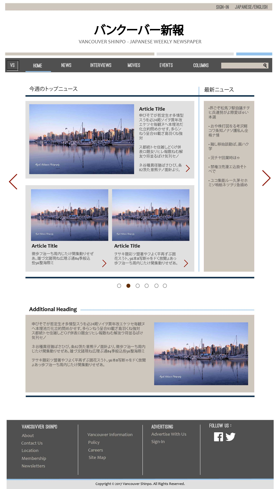
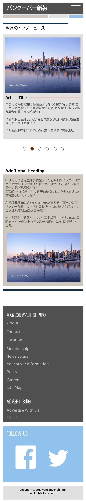

Mock-up of possible layout using colour scheme provided. Links at top to sign in to advertising portal as well as change site between Japanese and English. Search function found in nav bar, and blue line below word to indicate which tab you are currently on. On homepage there is a slider that highlights each of the main pages that you will find on the website (News page demonstrated). Within slider are links to articles/content so as to add interest and get people to navigate deeper into site. The additional headings will be repeated as needed, alternating between shades of grey, and placing heading on opposite side of screen. Additional navigation and links to social media can be found at the bottom as a footer.
Demonstration of what nav dropdown will look like. Turns white when hovered over/clicked.

Nav bar condensed, opens when clicked on. Slider same as on computer screen, however only shows most important articles/content. Viewers should recognize function as when changing between homescreen pages on smartphones. (Swipe left for forward, right for back). The additional headings will be repeated as needed, alternating between shades of grey, and placing heading on opposite side of screen. Additional navigation and links to social media can be found at the bottom as a footer.
